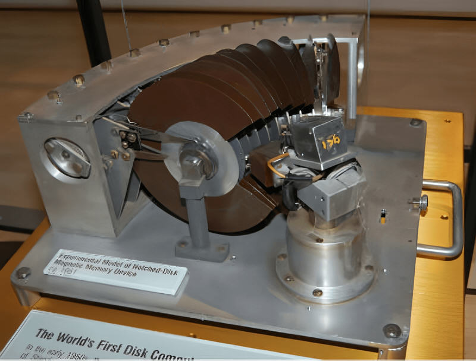

Feature 01 · EXPLAINER · 2024 12
How S3 works and why it scales
S3 is a place to keep files on the internet. You put a file in under a name and later get it back by that name over HTTP. Since December 2020, once a write succeeds, every read sees it. Inside, each file is cut into pieces and spread over a random handful of S3’s hard drives, which numbered tens of millions by 2024. One workload alone is spiky, idle for hours and then suddenly busy. Millions added together make a smooth, predictable load, and S3 is built to exploit that.
Every example below follows one hypothetical photo app. It stores a 1 MB picture under the name photos/puppy.jpg, in a bucket called amzn-s3-demo-bucket, in the US West (Oregon) Region.
As a user
S3 is an object store. An object is a file plus metadata, name-value pairs that describe it, such as its Content-Type. A bucket is a container for objects. A key is an object’s name, unique within its bucket. Bucket and key together make an address:
https://amzn-s3-demo-bucket.s3.us-west-2.amazonaws.com/photos/puppy.jpg
A Region is the geographic area where the bucket lives. AWS’s documentation says objects never leave it unless you explicitly transfer or replicate them.
You touch four operations: PUT stores an object, GET reads it, LIST shows the keys in a bucket, and DELETE removes one.
What you can count on:
Strong read-after-write consistency. Once a PUT or DELETE succeeds, every later GET and LIST reflects it. Jeff Barr’s 2020 announcement: “What you write is what you will read.”
Privacy by default. Buckets and objects are private until you grant access.
Durability by design. The ShardStore paper says S3 “is designed for eleven nines of data durability,” that is, 99.999999999 percent.
Paying only for what you use.
When the app saves the puppy, it sends a PUT. When it shows the album, it sends a LIST, and the new photo is there as soon as the PUT has returned.
As a developer
Single-key updates are atomic. If one thread overwrites photos/puppy.jpg while another reads it, the reader gets the old picture or the new one, never a torn mix.
What S3 does not guarantee. The AWS documentation lists three gaps:
No locking. If the user edits the puppy on a phone and a laptop at once, “the request with the latest timestamp wins,” and the order S3 receives them in cannot be predicted. Read after both writes are acknowledged to learn which survived. If you need a lock, build one.
No transactions across keys. The photo and an album index under a second key cannot be made to succeed or fail together.
Bucket configuration is eventually consistent, meaning a change spreads over time. After first enabling versioning, AWS recommends waiting 15 minutes before writing.
Request rates. A prefix is the leading part of a key, such as photos/. The AWS performance guide says an application can achieve at least 3,500 PUT/COPY/POST/DELETE or 5,500 GET/HEAD requests per second per partitioned prefix, with no limit on prefixes. S3 scales up gradually; meanwhile you may see 503 Slow Down errors, which “will dissipate when the scaling is complete.” Don’t treat them as permanent.
Retries. The AWS SDKs retry automatically. James Bornholt explains in his 2024 talk why a retry nearly always works: S3’s front-end servers keep no state, so the SDK can send the retry to a different server.
Inside
One PUT
Finding a server. The app’s DNS lookup returns several IP addresses, each pointing to a different set of front-end servers. A colleague resolving the same name gets a different set, so one heavy customer rarely shares servers with another. Any front-end server can reach any byte.
Recording the object. A separate metadata subsystem sits on the path of every GET, PUT, and DELETE. It maps the request to shard identifiers, names for the pieces the object will become.
Cutting it up. S3 uses erasure coding. Bornholt’s slide example: split the 1 MB puppy into five shards, compute four parity shards so that any five of the nine rebuild the photo, and place three in each of three Availability Zones, separate data centers within a Region. A lost zone leaves six shards; any four drives can fail. The cost is 1.8 bytes stored per byte, where surviving four failures with plain copies would take five copies. These numbers illustrate the idea; the sources do not say which scheme a given object uses.
Choosing drives. Every PUT, even to the same key, gets its own random set of drives. This is shuffle sharding. Examining all drives is too slow, and pure chance, in Bornholt’s simulation, leaves some drives 10 to 20 percent less full than others. So S3 picks two drives at random and takes the emptier one, the power of two random choices, which lands very close to perfect balance.
Writing to disk. Each drive runs ShardStore, a storage engine S3 wrote in Rust. It is log-structured: it appends new data rather than overwriting, so the disk arm moves less. Every write carries a dependency, meaning “do not write me until that is safely on disk,” so a crash leaves a consistent state.
Making it visible. A component called a witness is told every time an object changes. It keeps little state, in memory, so it is fast and quick to replace.
One GET
The metadata subsystem caches for speed, and Werner Vogels names that cache “the primary source of S3’s eventual consistency.” Since 2020, a read asks the witness whether the cached view is stale. If not, it is served; if so, S3 reads from the persistent store.
Then S3 needs any five of the nine shards. If one drive is slow, it cancels that read and fetches another shard. Bornholt calls this a hedge against tail latency, the slowness of the slowest few percent of requests.
Why it is fast

A hard drive must move its arm to the right track (seeking) and wait for the platter to turn (rotational latency). Andy Warfield says a drive does about 120 random operations per second, roughly as in 2006. Since 1956, capacity has grown 7.2 million times; seek times, only 150 times.
Seth Markle’s 2024 talk did the arithmetic for a made-up workload: reading a petabyte in one hour needs 275 GB per second. Storing it takes 50 drives of 20 TB. Reading it at that rate takes over 5,000, idle 23 hours a day.
Independent workloads do not peak together. Once enough are added up, Warfield says, it becomes “difficult or impossible for any given workload to really influence the aggregate peak at all.” So S3 spreads each customer across far more drives than its data would fill. Markle says tens of thousands of customers have data across more than a million drives each. At this scale, size stops being the problem and becomes the remedy.
Why it is correct
Vogels says the consistency protocol had to hold in every case, since at S3’s scale something that happens “only once in a billion requests” happens several times a day. The team used proofs and model checking, and the verification took more work than the implementation.
For ShardStore, engineers write a reference model of each component: a small, simple version with the same interface. The LSM-tree index, a structure that batches writes in memory and flushes them sorted, is modeled as a hash map. Random operation sequences, simulated crashes, and checkers that explore thread interleavings compare the real code against these models. The paper reports they stopped 16 issues from reaching production.
The same fault tolerance let S3 roll ShardStore out safely: first one shard per object, then two, then three, then a whole Availability Zone, then everywhere. In Bornholt’s words, the team changed “the engine of S3” without customers noticing. The puppy’s shards were stored the whole time.